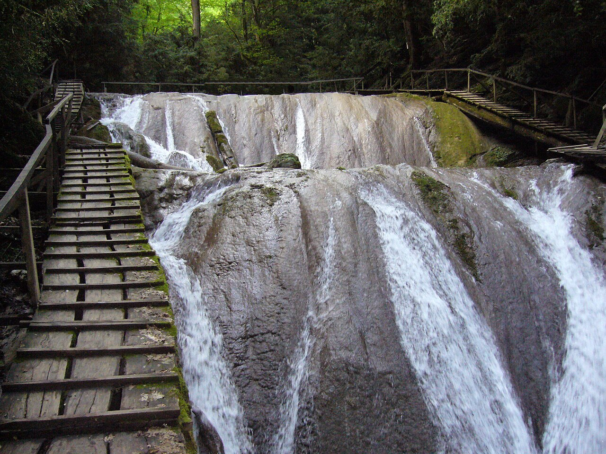

Гора Ахун
Панорамы побережья и остановки по дороге. Доступ к конкретным площадкам уточняем перед поездкой.
Официальный источник
МАРШРУТ / ПРИРОДА
Лес, вода и видовые остановки. Природный маршрут собираем по погоде и состоянию троп, без обещаний пройти все места за один день.
ПО ПУТИ
Панорамы побережья и остановки по дороге. Доступ к конкретным площадкам уточняем перед поездкой.
Официальный источникПрогулка по лесной тропе. Длина маршрута зависит от подготовки гостей и погоды.
Официальный источникОтдельный выезд к каскаду в урочище Джегош. На него стоит закладывать время.
Официальный источник
Главное фото: Ахун, Лилия Гимбицкая, CC BY 4.0. Состав и доступность маршрута проверяем перед поездкой.